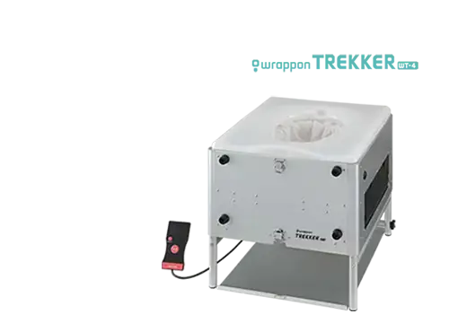
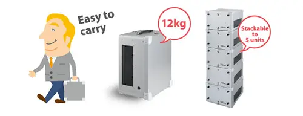

랩폰 트레커(TREKKER) 자동 밀봉 이동식 화장실
손대지 않고 자동으로간편하고 위생적인 처리.
냄새 확산을 줄이는 전용 필름.


랩폰코리아 · 제품 안내
랩폰 트레커(TREKKER) 아웃도어 화장실
랩폰 트레커는 알루미늄 바디를 적용한 랩폰(WRAPPON) 자동 밀봉 이동식 화장실입니다. 버튼으로 필름 공급과 열 밀봉을 작동하며, 캠핑과 아웃도어 및 재난 대비 환경에서 활용할 수 있습니다. 전원과 전용 소모품, 제품 규격을 확인해 사용 장소에 맞게 준비하세요.
독자적인 자동 열 밀봉 화장실 시스템
WRAPPON TREKKER 제품 안내
WRAPPON은 캠핑과 야외 활동에 함께할 수 있는 이동식 화장실입니다. 재난 상황에서도 화장실은 꼭 필요한 시설입니다. 평소의 야외 활동부터 비상시 대비까지 다양하게 활용할 수 있습니다.
WRAPPON이란?
WRAPPON은 일본 Nihon Safety Co., Ltd.가 개발한 혁신적인 화장실 시스템입니다.
열 밀봉 기술로 배설물을 자동으로 위생적으로 포장합니다. 물을 사용하지 않고 냄새와 오염을 줄이도록 설계되었습니다.
또한 배설물을 밀봉하여 접촉을 줄이고
위생적으로 처리할 수 있도록 돕습니다.

자동 밀봉 화장실
TREKKER 알아보기
니혼세이프티가 개발한 TREKKER는 물 없이 열 밀봉으로 배설물을 처리하는 이동식 화장실입니다. 배설물을 개별 포장하고 사용한 필름을 절단하여 위생적인 뒤처리를 돕습니다.
WRAPPON TREKKER는 캠핑과 야외 레저 활동에 유용하며 재난에 대비해 비축할 수도 있습니다.

WRAPPON TREKKER는 알루미늄 본체로 튼튼한 내구성을 갖추어 오래 사용할 수 있도록 설계되었습니다.
미국·캐나다 공식 판매점
WRAPPON USA
미국·캐나다 고객은 ‘WRAPPON USA’ 웹사이트를 이용해 주세요.
WRAPPON USA 문의는 해당 웹사이트를 이용해 주세요.
WRAPPON USA 문의는 해당 웹사이트를 이용해 주세요.


다양한 상황에서 유용하게 !!

활동의 범위를 더 넓게.
이동식 화장실 TREKKER는 작고 휴대하기 편리하며, 내구성 있는 알루미늄 본체를 갖추고 있습니다.
자동 포장 시스템은 배설물을 전용 필름에 밀봉하여 냄새가 차량 안으로 퍼지는 것을 줄입니다. 캠핑 등 야외 활동에서 편리하게 사용할 수 있습니다.
캠핑카에 TREKKER를 준비하면 화장실 시설이 없는 장소에서도 활동의 범위를 넓힐 수 있습니다.
타워크레인과 같은 고소 작업 장소나 건설 현장에서도 오수 탱크의 수거 작업 없이 사용할 수 있는 간이 화장실로 활용할 수 있습니다.
튼튼한 TREKKER 본체는 조립이 간편하여 업무 현장에서도 활용하기 좋습니다.
자동 포장 시스템은 배설물을 전용 필름에 밀봉하여 냄새가 차량 안으로 퍼지는 것을 줄입니다. 캠핑 등 야외 활동에서 편리하게 사용할 수 있습니다.
캠핑카에 TREKKER를 준비하면 화장실 시설이 없는 장소에서도 활동의 범위를 넓힐 수 있습니다.
타워크레인과 같은 고소 작업 장소나 건설 현장에서도 오수 탱크의 수거 작업 없이 사용할 수 있는 간이 화장실로 활용할 수 있습니다.
튼튼한 TREKKER 본체는 조립이 간편하여 업무 현장에서도 활용하기 좋습니다.
재난 상황에 미리 대비하세요 !!

재난 상황에서 화장실은 꼭 필요한 시설입니다. 집에 머물 수 있더라도 정전이나 단수로 기존 화장실을 사용하지 못할 수 있습니다. !!
비상용 화장실을 준비하면 대피소 이동이 어려운 상황에서도 화장실 확보에 도움이 됩니다. !!
비상용 화장실을 준비하면 대피소 이동이 어려운 상황에서도 화장실 확보에 도움이 됩니다. !!
간편한 작동
세 단계로 간편하게 사용 !

전용 응고제 넣기
사용 전에 전용 응고제를 넣고 용변을 봅니다. 전용 응고제는 소변과 배설물의 수분을 흡수합니다.

리모컨 버튼 누르기
사용 후 리모컨 버튼을 누르면 전용 필름이 자동으로 공급되어 배설물을 포장합니다. 손으로 만지지 않고 필름을 밀봉하고 절단합니다.

밀봉된 봉투 꺼내기
약 90초 후 완료 알림음이 울립니다. 아래쪽 트레이를 당겨 밀봉된 봉투를 꺼냅니다.
일반 이동식 화장실의 냄새 고민
이런! !!! 냄새가 나요…
TREKKER 전용 필름으로 냄새와 배설물 밀봉

냄새 확산과 배설물 접촉을 줄이는 전용 필름
전용 냄새 차단 필름은 배설물과 구토물을 개별 포장·밀봉하여 냄새 확산과 직접 접촉을 줄이도록 설계되었습니다. 필름은 폴리에틸렌 소재이며, 사용한 봉투는 일회용 기저귀와 유사하게 처리합니다. 단, 모든 감염 위험을 방지하는 것은 아니며 실제 폐기 시에는 지역의 배출 기준을 따라야 합니다.
※ 장기간 냄새 차단을 보장하지 않으므로 사용한 봉투는 가능한 한 빨리 처리해 주세요. TREKKER WT-4가 감염을 100% 예방하는 것은 아닙니다. 폐기 방법은 관할 지자체의 기준을 확인해 주세요.
 열 밀봉으로 배설물을 개별 포장하여 냄새 확산과 직접 접촉을 줄입니다.
열 밀봉으로 배설물을 개별 포장하여 냄새 확산과 직접 접촉을 줄입니다.
TREKKER · SUNNY · PF-1 · ORB
공통 특징
쉽고 간편한 조작
자동식 모델은 버튼 하나로 간편하게 작동합니다. 처리 중 상태와 완료 여부를 알림음과 표시창으로 확인할 수 있으며, 오류가 발생하면 알려줍니다. 수동식 모델은 레버를 두 단계로 조작합니다.
본체 LED와 알림음으로 처리 시작과 완료를 확인할 수 있습니다.
사용 후 처리 부담 감소
물을 사용하지 않고 배설물을 포장합니다. 오물통 세척이나 사용한 기저귀 운반 등 기존 휴대용 화장실 사용 후 처리에 따르는 번거로움을 줄여줍니다.
개별 포장된 봉투의 배출 방법은 사용 지역의 폐기물 배출 기준에 따라 확인해 주세요.
냄새 차단
WRAPPON은 사용할 때마다 배설물을 포장하고 밀봉하여 냄새가 새어 나오는 것을 줄이도록 설계되었습니다.
휴대용 화장실이나 사용한 기저귀에서 발생하는 냄새 문제를 줄이는 데 도움을 줍니다.
재난·비상 상황에 활용
정전 등으로 일반 전원을 사용할 수 없을 때도 호환되는 별도 전원을 확보해 사용할 수 있습니다.
모델에 맞는 소형 리튬이온 배터리 ‘핸디 배터리’나 차량 전원 소켓에 연결해 사용할 수 있습니다.
WRAPPON은 재난 상황에서 활용할 수 있는 화장실로 주목받고 있습니다.
배설물의 위생적 밀봉
WRAPPON은 열 밀봉 방식으로 배설물을 개별 포장하여 위생적으로 처리할 수 있도록 돕습니다.
물을 사용하지 않아 수세식 화장실에서 발생할 수 있는 물 튐으로 인한 오염을 줄일 수 있습니다.
안전을 고려한 설계
자동식 모델에는 ‘끼임 방지 기능’이 있습니다. 작동 후 필름이 닫힐 때 이물질이나 손의 끼임을 감지하면 작동을 멈춥니다.
편리한 휴대와 보관
 약 12kg의 접이식 본체로 휴대와 보관이 편리합니다.
약 12kg의 접이식 본체로 휴대와 보관이 편리합니다.
약 12kg, 작고 휴대하기 편리한 구조.
본체는 알루미늄 합금으로 제작되어 부식에 강하고 관리가 편리합니다. TREKKER WT-4는 이동하기 편리하며, 사용하지 않을 때는 접어서 작게 보관할 수 있습니다.
최대 5대 적재 가능

본사 이미지 안내: 무게 약 12kg · 최대 5대 적재 가능.제품 소개
WRAPPON 제품군


소모품 및 옵션 부품
 공통 소모품 안내 이미지입니다. PF-1 전용품과 공용품이 함께 표시되어 있으므로 TREKKER 호환 여부를 확인해 주세요.
공통 소모품 안내 이미지입니다. PF-1 전용품과 공용품이 함께 표시되어 있으므로 TREKKER 호환 여부를 확인해 주세요.
구매 시 주의 !!
WRAPPON 제품마다 전용 소모품과 옵션 부품이 다릅니다. 별도로 구매할 때는 해당 제품에 맞는 품목인지 확인해 주세요.
제품 구매 시 제공된 것과 동일한 전용 소모품을 사용해 주세요. 호환 여부가 불확실하면 동봉된 사용설명서를 확인해 주세요.
“RV와 SUV에 잘 어울리는 선택.”
WRAPPON 텐트 WPT-01은 몇 분 만에 설치하고,
숄더백에 작게 접어 보관하며,
여행지 어디서나 프라이버시를 지켜줍니다.
WRAPPON TREKKER WT-4 자료 다운로드

WRAPPON USA 공식 웹사이트
‘WRAPPON USA’는 WRAPPON 공식 판매점입니다.
미국·캐나다 고객을 위한 WRAPPON USA 판매처 안내입니다.
Wrappon USATREKKER WT-4 주요 사양
| 본체 소재 | 알루미늄 합금 |
|---|---|
| 무게 | 약 12 kg |
| 처리 방식 | 버튼으로 작동하는 자동 필름 공급·열 밀봉·절단 |
| 포장 시간 | 약 90초 후 완료 알림 |
| 보관 | 접어서 보관 가능 · 본사 이미지 기준 최대 5대 적재 |
소모품과 옵션 이미지 안내
원본 공통 소모품 이미지에는 PF-1 전용 소모품 세트와 배변 봉투, 응고제, 배터리, DC 케이블, 공용 소모품이 표시되어 있습니다. PF-1 전용품을 TREKKER용으로 사용하지 않도록 주의하고, TREKKER WT-4에 맞는 필름과 응고제의 호환 여부를 확인해 주세요.
제품 이미지의 설명
열 밀봉으로 배설물을 개별 포장하여 냄새 확산과 직접 접촉을 줄이는 원리를 보여 줍니다. 포장 후에도 장기간 냄새 차단이나 모든 감염 위험의 예방을 보장하는 것은 아닙니다.